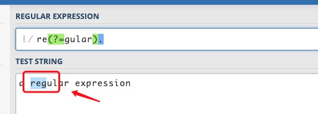
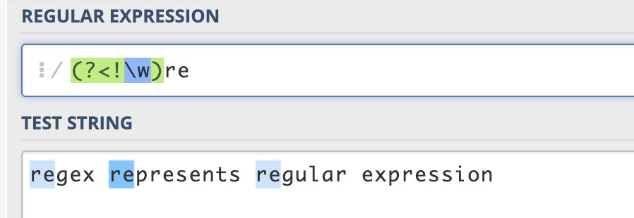
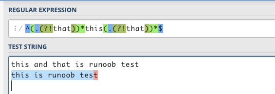

Las aserciones de ancho cero en las expresiones regulares son una estructura especial que no consume caracteres al hacer coincidir, sino que solo realiza un juicio condicional sobre la posición de coincidencia. Esto es muy útil para algunos patrones de coincidencia complejos, porque permite añadir condiciones antes o después de la posición de coincidencia, controlando así la coincidencia con mayor precisión.
Las aserciones de anticipación y de retroceso en las expresiones regulares tienen en total 4 formas:
- (?=pattern)Aserción de anticipación positiva de ancho cero (zero-width positive lookahead assertion)
- (?!pattern)Aserción de anticipación negativa de ancho cero (zero-width negative lookahead assertion)
- (?<=pattern)Aserción de retroceso positiva de ancho cero (zero-width positive lookbehind assertion)
- (?<!pattern)Aserción de retroceso negativa de ancho cero (zero-width negative lookbehind assertion)
Dentro de estos,patternes una expresión regular.
Así como^representa el inicio,$representa el final,\brepresenta el límite de palabra, las aserciones de anticipación y de retroceso tienen un efecto similar: solo coinciden con ciertas posiciones y no consumen caracteres durante el proceso de coincidencia, por lo que se denominan«ancho cero». La llamada posición se refiere al lado izquierdo del primer carácter, al lado derecho del último carácter y al medio entre caracteres adyacentes en la cadena (en cada línea), asumiendo que la dirección del texto es de izquierda a derecha (cabeza a la izquierda, cola a la derecha).
Explicación de conceptos:
- Ancho cero (Zero-width): solo coincide con posiciones; ancho cero significa que la aserción no «consume» la cadena al coincidir, sino que solo realiza un juicio condicional sobre la posición, sin incluir en el resultado de coincidencia los caracteres anteriores o posteriores a la posición de coincidencia.
- Anticipación (Lookahead): indica que la aserción ocurre antes de la posición de coincidencia.
- Retroceso (Lookbehind): indica que la aserción ocurre después de la posición de coincidencia.
- Positivo (Positive): coincide con la expresión entre paréntesis, es decir, el juicio condicional de la aserción es afirmativo; solo cuando la condición se cumple, la coincidencia tiene éxito.
- Negativo (Negative): no coincide con la expresión entre paréntesis, es decir, el juicio condicional de la aserción es negativo; solo cuando la condición no se cumple, la coincidencia tiene éxito.
A continuación, se dan ejemplos para explicar el significado de estos 4 tipos de aserciones.
(?=pattern) Aserción de anticipación positiva
Representa una posición en la cadena; la secuencia de caracteres inmediatamente después de esa posición puede coincidir con pattern.
Por ejemplo, para"a regular expression"esta cadena, si se quiere hacer coincidir `re` en `regular` pero no `re` en `expression`, se puede usarre(?=gular), esta expresión limita la posición a la derecha de `re`; después de esta posición está `gular`, pero no consume los caracteres `gular`.


(?!pattern) Aserción de anticipación negativa
Representa una posición en la cadena; la secuencia de caracteres inmediatamente después de esa posición no puede coincidir con pattern.
Por ejemplo, para"regex represents regular expression"esta cadena, si se quiere hacer coincidir `re` excepto en `regex` y `regular`, se puede usarre(?!g), esta expresión limitarela posición de la derecha; después de esta posición no hay un carácterg。
La diferencia entre negativa y positiva radica en si los caracteres después de esa posición pueden coincidir con la expresión entre paréntesis.

(?<=pattern) Aserción de retroceso positiva
Representa una posición en la cadena; la secuencia de caracteres inmediatamente antes de esa posición puede coincidir con pattern.
Por ejemplo, pararegex represents regular expressionesta cadena, que tiene 4 palabras, si se quiere hacer coincidir las `re` dentro de las palabras pero no las `re` al comienzo de las palabras, se puede usar(?<=\w)re, para una `re` dentro de una palabra, delante de `re` debería haber un carácter de palabra.
Se llama aserción de retroceso porque, cuando el motor de expresiones regulares compara la cadena con la expresión, escanea los caracteres de la cadena uno por uno de adelante hacia atrás y determina si coinciden con la expresión. Cuando se encuentra con esta aserción en la expresión, el motor necesita examinar hacia el frente de la cadena los caracteres ya escaneados, lo cual es hacia atrás con respecto a la dirección del escaneo.

(?<!pattern) Aserción de retroceso negativa
Representa una posición en la cadena; la secuencia de caracteres inmediatamente antes de esa posición no puede coincidir con pattern.
Por ejemplo, para"regex represents regular expression"esta cadena, si se quiere hacer coincidir las `re` al comienzo de una palabra, se puede usar(?<!\w)re. Las `re` al comienzo de una palabra,reen este ejemplo, se refiere a las que no están dentro de una palabra,rees decir,redelante de las cuales no hay un carácter de palabra. Por supuesto, también se puede usar\brepara coincidir.

Para entender estas 4 aserciones, se puede abordar desde dos aspectos:
-
1. Sobre la anticipación (lookahead) y el retroceso (lookbehind):Cuando el motor de expresiones regulares ejecuta la coincidencia entre la cadena y la expresión, escanea continuamente los caracteres de la cadena de principio a fin (de adelante hacia atrás). Imagina un puntero de escaneo que apunta al límite de los caracteres y se mueve durante el proceso. En la aserción de anticipación, cuando el puntero de escaneo está en un lugar, el motor intenta coincidir con caracteres que el puntero aún no ha escaneado; llega a esos caracteres antes que el puntero, por eso se llama anticipación. En la aserción de retroceso, el motor intenta coincidir con caracteres ya escaneados por el puntero; llega después que el puntero, por eso se llama retroceso.
-
2. Sobre positivo (positive) y negativo (negative):Positivo significa que coincide con la expresión entre paréntesis; negativo significa que no coincide.
Para memorizar estas 4 formas de aserciones:
-
1. Anticipación y retroceso:Aserción de retroceso(?<=pattern)、(?<!pattern)hay un signo de menor que, que también es una flecha; para la dirección del texto de izquierda a derecha, esta flecha apunta hacia atrás, lo que también se ajusta a nuestro hábito. Quitando el signo de menor que, se obtiene la aserción de anticipación.
-
2. Positivo y negativo:Distinto de,(!=)negación lógica,(!)se representan ambos con!el signo, por lo tanto, la forma que tiene!el signo indica no coincidencia, negativa; al cambiar!el signo por=el signo, entonces indica coincidencia, positiva.
A menudo usamos expresiones regulares para detectar si una cadena contiene una subcadena. Es fácil expresar que una cadena no contiene un carácter o ciertos caracteres: se puede usar[^...]la forma es suficiente. ¿Y si se quiere expresar que una cadena no contiene una subcadena (compuesta por una secuencia de caracteres)?
usar[^...]Esa forma no funciona; entonces hay que usar aserciones de anticipación (negativas) o de retroceso, o usarlas simultáneamente.
Por ejemplo, para determinar si una oración contienethis, pero no contienethat。
contienethises fácil de manejar. Que una oración no contengathat, se puede considerar que delante de cada carácter de la oración no estáthato que detrás de cada carácter no estáthat. La expresión regular es la siguiente:
^((?<!that).)*this((?<!that).)*$ 或 ^(.(?!that))*this(.(?!that))*$
Parathis is runoob testesta oración, ambas expresiones pueden coincidir con éxito, mientras quethis and that is runoob testtodas fallan en la coincidencia.


En condiciones normales, estas dos expresiones básicamente pueden cumplir los requisitos. Considerando casos extremos, como una oración que comienza conthaty termina conthatal final,thatythiscuando están conectados, las expresiones anteriores pueden no ser capaces.runoob thatthis is the caseothis is the case, not thatetc.
Solo hay que utilizar estas aserciones con flexibilidad, y será fácil de resolver:
^(.(?<!that))*this(.(?<!that))*$ ^(.(?<!that))*this((?!that).)*$ ^((?!that).)*this(.(?<!that))*$ ^((?!that).)*this((?!that).)*$
Estas 4 expresiones regulares prueban las oraciones mencionadas anteriormente, y los resultados pueden cumplir los requisitos.
De las 4 aserciones anteriores, el pattern entre paréntesis es en sí mismo una expresión regular. Pero hay restricciones para los 2 tipos de aserciones de retroceso: en Perl y Python, esta expresión debe ser de longitud fija (fixed length), es decir, no se pueden usar*、+、?metacaracteres como, por ejemplo,(?<=abc)no hay problema, pero(?<=a*bc)no está soportado, especialmente cuando la expresión contiene ramas conectadas por `|`; todas las ramas deben tener la misma longitud. La razón por la que no se admiten expresiones de longitud variable es que, cuando el motor comprueba la aserción de retroceso, no puede determinar cuántos pasos debe retroceder. Java admite?、{m}、{n,m}símbolos como, pero tampoco admite*、+el carácter. Javascript simplemente no admite aserciones de retroceso; sin embargo, en general, esto no es un gran problema.
Las aserciones de anticipación y de retroceso son, en cierto modo, como usarifuna declaración para verificar y validar los caracteres antes y después de la coincidencia.
A continuación se enumeran los usos de ?=, ?<=, ?!, ?<!=.
exp1(?=exp2): buscar exp1 antes de exp2.

(?<=exp2)exp1: buscar exp1 después de exp2.

exp1(?!exp2)Buscar exp1 que no esté seguido de exp2.

(?<!=exp2)exp1Buscar exp1 que no esté precedido de exp2.

Enlace de referencia: https://blog.51cto.com/cnn237111/749047